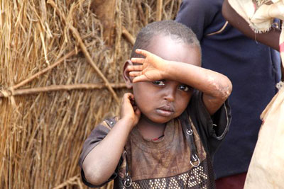
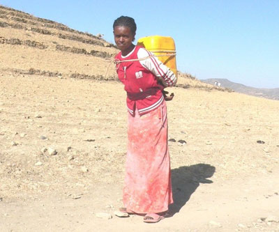
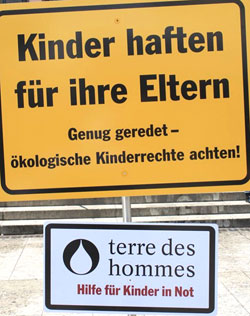
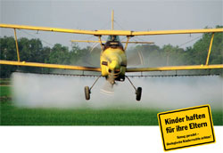

|
Verschwendung natürlicher Ressourcen bedroht das Kinderrecht auf gesunde Umwelt
Neue Studie zum Klimawandel: terre des hommes und Germanwatch fordern entschiedenen Klimaschutz |
Am 21. August ist der Tag erreicht, an dem wir Menschen alle Ökodienstleistungen - von der CO2-Aufnahmefähigkeit der Wälder und Meere, über die Nutzung der Trinkwasserreserven bis zur Produktion von Rohmaterialien und Nahrung - die die Natur für ein Jahr bereitstellt, bereits aufgebraucht haben. Von diesem Tag an bis zum Ende des Jahres verbrauchen wir somit mehr Ressourcen und verursachen mehr Abfall als die Erde bereitstellen bzw. ausgleichen kann. Dieser Tag, der als Earth Overshoot Day bezeichnet wird, markiert also jenen Zeitpunkt, ab dem die Menschen auf Kosten zukünftiger Generationen leben. Der Klimawandel ist eine der gravierendsten Auswirkungen davon, dass die Menschen die natürlichen Belastungsgrenzen der Erde überschreiten. Welche Konsequenzen daraus vor allem für Kinder resultieren, zeigt die neue Studie von terre des hommes und Germanwatch: »Sonnige Zukunftsaussichten? Klimawandel, Wasser und die Rechte von Kindern und zukünftigen Generationen«.
Durch den Klimawandel steigt die globale Durchschnittstemperatur an, was viele Auswirkungen auf das Ökosystem der Erde hat. Eine Konsequenz der Erwärmung ist die Vermehrung von Krankheitserregern. Mehr Bakterien in Brunnen und Trinkwasserspeichern haben gravierende Folgen für Kinder. Schon jetzt zählen Durchfallerkrankungen zu den Haupttodesursachen von Kindern unter fünf Jahren:
»Für die peruanische Hauptstadt Lima beispielsweise belegen Studien den engen Zusammenhang von zunehmender Erwärmung und Gesundheitsrisiken: Dort steigt mit jedem Zehntelgrad Celsius Temperatursteigerung die Zahl der Durchfallerkrankungen um acht Prozent. Deshalb gehören Kinderrechte und Klimaschutz ganz eng zusammen«, erklärt Danuta Sacher, Geschäftsführerin von terre des hommes.
Der steigende Bedarf an natürlichen Ressourcen mündet in Raubbau an der Natur und zerstört damit die Lebensgrundlage vieler Menschen: Allein im Amazonasgebiet ist bereits ein Fünftel des Regenwaldes abgeholzt. Besonders arme Familien sind auf Nahrung aus der Natur angewiesen. Die Zerstörung der Umwelt beraubt sie und nachkommende Generationen ihrer Existenz. Deshalb fordern terre des hommes und Germanwatch die Wende zu einer nachhaltigen Wirtschafts- und Konsumorientierung um die Lebenschancen zukünftiger Generationen zu sichern.
»Um das Kinderrecht auf eine gesunde Umwelt zu schützen, bedarf es einer doppelten Handlungsstrategie: das Unbewältigbare durch massiven Klimaschutz zu vermeiden. Und das Unvermeidbare zu bewältigen - durch Anpassungsmaßnahmen, die die besonders verletzlichen Menschen, gerade auch Kinder, ins Zentrum stellen«, erklärt Christoph Bals, Politischer Geschäftsführer von Germanwatch.
Weitere Informationen:
|
Hilfe für die Hungernden in Ostafrika |

In den vergangenen Jahren konnte die Arbeitsgruppe terre des hommes Murgtal/Mittelbaden nahezu 100.000 Euro für Kinder und deren Familien zusammentragen, die bei Naturkatastrophen in existentielle Not gerieten. Vorrangig war dabei Notfallhilfe, aber auch eine nachhaltige Chance für die Zukunft. So halfen Spenden aus der Region beim Tsunami in Südasien, bei Überflutungen in Pakistan, Myanmar, Mosambik und Mittelamerika, bei Erdbeben in Indien und Chile sowie bei Dürrekatastrophen im südlichen Afrika und Sahel.
Notfallhilfe und jahrelange Projektarbeit
Der Schwerpunkt der regionalen Arbeitsgruppe liegt jedoch in der nachhaltigen Unterstützung mehrerer Projekte in unterschiedlichen Ländern. So erhalten Straßenkinder, Behinderte in Vietnam, Kinderarbeiter, Flüchtlingskinder und Kindersoldaten Gelder aus dem Murgtal und Umgebung. Projekte gegen Aids, sexuelle Ausbeutung und Mädchenhandel sowie für ökologische Kinderrechte werden gefördert. Perspektiven erhalten auch Gesundheits-, Schul- und Berufsbildungsprojekte.
Das Bündnis Entwicklung Hilft wird bei Katastrophen und in Krisengebieten aktiv
„tdh Deutschland“ arbeitet seit Jahren mit verschiedenen Hilfsorganisationen im Inland („Bündnis Entwicklung Hilft“) sowie im internationalen Verbund der tdh-Föderation eng zusammen. Das Ziel ist es, bei Projekten und Soforthilfen die Spenden- und Hilfsgelder möglichst effektiv und nachhaltig einzusetzen, langjährige Erfahrungen gegenseitig auszutauschen, Synergieeffekte zu nutzen und Konkurrenzdenken auszuschließen. Unterstütz wird das organisationsübergreifende Denken und Handeln auch dadurch, dass ehemalige tdh-Verantwortliche Geschäftsführer oder Sprecher anderer Hilfsorganisationen wurden.
„Bündnis Entwicklung Hilft“ ruft zu Spenden für Ostafrika auf

tdh unterstützt die Hilfsmaßnahmen des Bündnis Entwicklung Hilft für die Hungernden in Ostafrika. Die Bündnismitglieder Brot für die Welt, medico international, Misereor, Welthungerhilfe und terre des hommes kooperieren im Katastrophenfall und stimmen ihre Hilfsmaßnahmen, so wie in diesem Fall, gemeinsam ab. Derzeit sind die Mitgliedsorganisationen Brot für die Welt, Misereor, die Deutsche Welthungerhilfe und die Partner Christoffel-Blindenmission und die Kindernothilfe vor Ort tätig. Darüber hinaus leistet tdh Schweiz (Lausanne) wirksame Hilfe in der Krisenregion.
Die Welthungerhilfe verteilt über den Kooperationspartner Alliance2015-Concern Nahrungsmittel, Trinkwasser und Spezialnahrung für Kinder. In der Afar-Region im Nordosten Äthiopiens erhalten 2.700 Familien eine Monatsration Getreide, Bohnen und Öl. Misereor hilft mit einer Gesundheitsstation in der Region Baringo im Westen Kenias. Allein in dieser Region hungern rund 130.000 Menschen. Über 23 mobile Gesundheitsstationen erhalten die Menschen Nahrungsmittel wie getrocknetes Gemüse, Hirse und Bohnen.
Im Norden Kenias leiden die Menschen ebenfalls unter der Dürre. Dort sind viele natürliche Wasserstellen ausgetrocknet. Mit der Soforthilfe verstärkt der Bündnispartner Misereor seine Unterstützung für das Wasser-Programm in Marsabit, um die Menschen mit sauberem Trinkwasser zu versorgen. Brot für die Welt hilft in Süd-Somalia mit Nahrungsmitteln, Trinkwasser, Latrinen und Notunterkünften.
Auch tdh Schweiz kommt den Opfern zu Hilfe. Durch ein Netzwerk ist die Organisation in der Region Turkana, im Norden Kenias (an der Grenze zum Südsudan), vertreten und stellt Nahrungsmittel für von der Hungersnot betroffene Gemeinschaften bereit.
Ihre Spende - Stichwort: "Ostafrika"
Spendenkonto 51 51
Bank für Sozialwirtschaft
BLZ 370 205 00
Spendenkonto 120 790
Sparkasse Baden-Baden / Gaggenau
BLZ 662 500 30
Spendenkonto 102 748 00
VoBa Baden-Baden / Rastatt
BLZ 662 900 00
|
Mittwoch, 10. August 2011 |
Kampagne „Kinder haften für ihre Eltern“ zum Thema Ökologische Kinderrechte |
Wenn es um Umweltverschmutzung geht, dann sind es Kinder, die am schlimmsten betroffen sind, sich aber am wenigsten wehren können. Deshalb hat terre des hommes beschlossen die Kampagne „Kinder haften für ihre Ehern. Genug geredet - ökologische Kinderrechte jetzt achten!" ins Leben zu rufen. Ökologische Kinderrechte werden von der National Coalition der UN-Kinderrechtskonvention in Deutschland definiert als das „Recht eines jeden Kindes auf dieser Welt, in einer intakten Umwelt aufzuwachsen, ein gesundes Leben zu führen und positive Zukunftsper�spektiven zu entwickeln".
Konkret heißt dies, dass der Klimawandel verlangsamt werden muss, auf Pestizide verzichtet werden muss, Strom nicht mehr aus Atomkraft und Kohlekraft gewonnen wird, sondern aus erneuerbaren Energien und Abwässer z. B. nicht mehr einfach in einen Fluss geleitet werden dürfen.
Mittlerweile sterben schon drei Millionen Kinder jährlich an umweltbezogenen Krankheiten. Es geht darum die Erde so zu hinterlassen, dass Menschen auch in 200 Jahren möglichst gut hier leben können. Dazu muss jeder etwas tun. Anstatt jeden Kilometer gleich mit dem Auto zu fahren, kann man auch zu Fuß gehen. Man kann natürlich auch Bio-Lebensmittel kaufen und auf den Stromverbrauch achten. Computer, Fernseher etc. ausschalten, anstatt auf Stand-by schalten und Strom von Firmen beziehen, die ausschließlich Öko-Strom liefern sind weitere Möglichkeiten.
Terre des hommes unterstützt unter anderem ein Projekt in Nicaragua, bei denen Öko-Agrartechniker ausgebildet werden welche lernen, Land nach ökologischen Maßstäben zu bewirtschaften.
Passend zum Thema gibt es bei der Kampagne „Ökolo�gische Kinderrechte" für Kinder und Jugendliche die Möglichkeit, eine Botschaft auf Bannern für den UN-Gipfel für nachhaltige Entwicklung im Jahr 2012 in Rio de Janeiro aufzumalen, welche dann gesammelt werden und zusammengenäht auf dem Umweltgipfel als große Leinwand aufgezogen werden sollen. Als Botschaft kann man persönliche Forderungen, Erwartungen, Slogans zum Ausdruck bringen, alles, was einem zum Thema einfällt.
Für Kinder, Jugendliche und ganze Schulklassen, die sich engagieren wollen, gibt es die Möglichkeit, bei terre des hommes ein Kinderrechtsteam oder eine Jugend-AG zu gründen. Mittlerweile gibt es in Deutschland etwa dreißig aktive Teams. Darunter sind auch einige Schulklassen. Mit Aktionen, die zum einen interessant, lustig und fantasievoll sind, zum anderen aber auch zum Nachdenken anregen, kann man so seinen Teil für eine gerechtere Welt beitragen und hat dabei noch Spaß! Neben klassischen Infoständen kann man sich auch als Straßenkind verkleiden und Passanten über Straßenkinder aufklären oder gegen den Einsatz von Kindersoldaten protestieren, indem man rote Handabdrücke im Rahmen der Aktion „Red Hand" bei Festen, Veranstaltungen etc. sammelt.
Einmal im Jahr gibt es außerdem ein Treffen für alle Teams, genannt Vamos, auf dem man sich austauschen kann, gemeinsam an Aktionen teilnimmt und diese auch weiterentwickelt.
Unter www.kinderrechtsteams.de erfährt man, wo es schon Teams gibt, was es Neues gibt und vieles über die Projekte und die Projektländer. Außerdem kann man sich dort anmelden und Fragen stellen, wenn es welche geben sollte. Die Kinderrechtsteams und Jugend-AGs sind natür�lich kostenlos. Sie werden mit Material und Infos versorgt. Wir, vom Kinderrechtsteam Nojoud aus Rastatt, haben uns vor über 2 Jahren gegründet. Zusammen haben wir schon drei Zeitungen zu verschiedenen Themen wie Kindersol�daten und Kinderarbeit geschrieben, zwei Mal bei Straßen�kind für einen Tag teilgenommen und selber Bilder zum Thema Kindersoldaten auf Leinwand gemalt, die wir schon in unser Schule, dem Tulla-Gymnasium in Rastatt, sowie bei tdh-Konferenzen in Karlsruhe und Bad Honnef ausgestellt haben.
Regelmäßig beteiligen wir uns außerdem an der Aktion Red Hand (www.redhandday.org), bei der rote Handabdrücke auf Papier gegen den Einsatz von Kindersoldaten gesammelt werden und jedes Jahr am 12. Februar Politikern in aller Welt überreicht werden. So war unser Team im Februar 2010 ins Außenministerium nach Berlin eingeladen, wo wir Außenminister Guido Wester�welle die gesammelten Handabdrücke der Aktion „Red Hand" überreichen konnten.
Im Februar 2011 gewannen wir außerdem 1.000 € bei dem Wettbewerb „Ideen Initi�ative Zukunft", der vom dm-Markt und der UNESCO organisiert wurde. Im Mai waren wir auch beim Start der Kampagne „Ökologische Kinderrechte in Frankfurt dabei.
Seit Januar haben wir eine eigene Homepage: www.team-nojoud.de
Bei weiteren Fragen können Sie uns auch gerne unter sophie.uhing@gmx.de kontaktieren.
Vom 30. September bis zum 3. Oktober findet in Stutt�gart das diesjährige terre des hommes OPEN statt. An vier Tagen wird ein Programm mit internationalen Gästen, Musik, Vorträgen, Workshops und spannenden Diskussionen geboten. Im Mittelpunkt wird das Thema »Ökologische Kinderrechte« stehen, das Thema der neuen terre des hommes-Kampagne. Eingeladen sind alle terre des hommes-Förderer, Mitglieder, Interessierte und ihre Familien... Weitere Informationen unter www.tdh.de
Text: Sophie Uhing (14 Jahre) vom terre des hommes-Kinderrechtsteam Nojoud aus Rastatt
Veröffentlicht in "kiebitz" Nr. 01 / 2011, S. 22+23
Zeitschrift der Landesfachgruppe Sozialpädagogischer Berufe der GEW Baden-Württemberg
Mitglieder des Kinderrechtsteams „Nojoud“ aus Rastatt bemalen Banner mit Motiven zum Thema Ökologische Kinderrechte:
Weitere Informationen:
|
Mittwoch, 10. August 2011 |
Kinder haften für ihre Eltern - Kampagne von „terre des hommes" zu ökologischen Kinderrechten |
In den 90er Jahren wurden ökologische Kinderrechte in Umsetzung der UN-Kinderrechtskonvention definiert als „das Recht eines jedes Kindes auf dieser Welt, in einer in�takten Umwelt auf�zuwachsen, ein ge�sundes Leben zu fuhren und positive Zukunftsperspekti�ven zu entwickeln." 191 Staaten haben die UN-Kinderrechtskonvention ra�tifiziert und sich da�mit zu entsprechen�den Maßnahmen verpflichtet.
Und wie ist die Wirklichkeit heute?
3 Millionen Kinder sterben Jahr für Jahr an den Folgen von Umweltzerstö�rungen, viele Millionen Kinder erkranken - zum Teil auf Dauer. Pestizidvergiftungen sind zum Beispiel für mindestens zwei Millionen Erkrankungen pro Jahr verantwortlich.
Kinder brauchen eine intakte Umwelt
Terre des hommes greift das The�ma „Ökologische Kinderrechte" daher in der Kampagne „Kinder haften für ihre Eltern" auf. Die Kampagne richtet sich an Politik, Wirtschaft und Gesellschaft und möchte exemplarische Fälle von Verletzungen ökologischer Kin�derrechte dokumentieren. Die Verantwortung von Politik und Verbraucher/innen für die Schaf�fung eines nachhaltigen Zukunftsmodells soll eingefordert werden.
terre des hommes open 2011 in Stuttgart
Ein zentrales Element in dieser Kampagne wird „terre des hom�mes open 2011" sein, ein internationales Treffen von Expert/innen, Betroffenen, tdh-Aktiven und allen Interessierten vom 30. September bis zum 3. Oktober in Stuttgart und Umgebung. Das Thema „ökologische Kinderrech�te" wird hier in Workshops, Erfah�rungsberichten, Vorträgen und Aktionen bearbeitet werden. Ins�besondere soll terre des hommes open Impulse für die im Juni 2012 in Rio des Janeiro stattfindende UN-Nachhaltigkeitskonferenz ge�ben und mit dazu beitragen, dass die Rechte der Kinder und kom�mender Generationen mehr in den Mittelpunkt gerückt werden.
Regionales Kinderrechtsteam bei „Vamos“
Parallel zu terre des hommes open wird auch „Vamos", das Jahrestreffen der ca. 25 Kinder�rechtsteams von terre des hommes stattfinden. In den Kinderrechtsteams engagieren sich bundesweit mehrere hundert Kinder und Jugendliche für die Ziele von terre des hommes, darunter etliche Schulklassen.
Die Einzelveranstaltungen sind für alle Interessierten offen und insbesondere für Pädagoginnen und Pädagogen aus Kita und Schule wird es hier vielfältige In�formationen und Anregungen für die pädagogische Praxis geben. Schließlich sollte das Thema „Ökologische Kinderrechte" in al�len Bildungsbereichen zu einem zentralen Thema werden.
Alfred Uhing, tdh Murgtal/Mittelbaden
Mitglieder des tdh-Kinderrechtsteams Nojoud der AG tdh Murgtal/Mittelbaden betei�ligten sich am Auftakt der Kampagne „Kinder haften für ihre Eltern" am 27 Mai in Frankfurt und bemalten Transparente die bei „tdh open" und auf dem UN- Nachhaltigkeitsgipfel 2012 in Rio zu einem Riesentransparent zusammengefügt werden sollen:
Weitere Informationen:
|
Spendenübergabe aus tdh-Radbörse:
2.000 € Erlös für Projekt „Ausbildung statt Drogen und Gewalt“ in Kolumbien |
206 Fahrräder wechselten Ende März in weniger als drei Stunden ihre Besitzer. Die „Radbörse“ der terre des hommes Arbeitsgruppe Murgtal/Mittelbaden, die mittlerweile zu einer der größten Radbörsen im mittelbadischen Raum gehört, hatte weit über 1000 Besucher in die Knöpflestadt Kuppenheim gelockt, die rechtzeitig zur Fahrradsaison nach einem neuen Zweirad Ausschau hielten. Die „tdh-Radbörse“, die in diesem Jahr ihren 20. Geburtstag feierte und seit Anfang an von den Radsportfreunden Kuppenheim, dem RadHaus Kastner und der Sparkasse Baden-Baden/Gaggenau, Filiale Kuppenheim, unterstützt wird, stellt ihren diesjährigen Erlös dem terre des hommes Partnerprojekt „Ausbildung statt Drogen und Gewalt“ in den Werkstattschulen in San Cristobal/Kolumbien zur Verfügung. Klaus Kastner (links im Bild), Branimir Pavlovic, Leiter der Sparkassenfiliale Kuppenheim (Mitte) sowie Reinhard Lehre und Joachim Eisen von den Kuppenheimer Radsportfreunden konnten an die Organisatoren Uli Thoma und Josef Luft dieser Tage einen Spendenscheck in Höhe von 2.000 Euro überreichen.
|
Donnerstag, 04. August 2011 |
Pestizide - tödliche Gefahr für Kinder
Studie von terre des hommes und Pestizid Aktions-Netzwerk (PAN) belegt besondere Gefährdung von Kindern in Entwicklungsländern |
Kinder sind in zahlreichen Entwicklungsländern der Gefahr schwerer Vergiftungen durch Pestizide schutzlos ausgesetzt. Dies ist das Ergebnis der Studie "Pestizide und Kinder - Die Gefahr von Umweltgiften für Kinder", die das internationale Kinderhilfswerk terre des hommes gemeinsam mit dem Pestizid Aktions-Netzwerk (PAN) erstellt hat. Die Studie ist ein Hintergrund-Dokument der terre des hommes-Kampagne für ökologische Kinderrechte und der PAN-Initiative zur Beendigung der Nutzung hochgefährlicher Pestizide.
Deutlich wird, dass Kinder aufgrund ihrer körperlichen Sensibilität besonders unter Vergiftungsgefahr leiden. Bereits der Embryo nehme beim Kontakt mit Pestiziden durch die Mutter die in ihrem Körper eingelagerten Schadstoffe auf. Zudem sei bei Kindern die Atmungsfrequenz größer als bei Erwachsenen, und sie verfügten im Vergleich über deutlich weniger Enzyme, die Gifte im Körper abbauen. Viele akute Vergiftungen gingen auf Pestizidrückstände in Lebensmitteln oder die falsche Nutzung offen zugänglicher Pestizide zurück. Jährlich sind eine bis 41 Millionen Menschen von Pestizidvergiftungen betroffen, mindestens 40.000 enden laut WHO tödlich. 99 Prozent der Vergiftungen ereignen sich in Entwicklungsländern. Die Dunkelziffer ist hoch. Nicht erfasst werden die schleichenden, langfristigen Vergiftungen und Schäden.
"Pestizide schädigen Kinder dauerhaft und nehmen ihnen vor allem in armen Ländern ihre Lebenschancen. Kinder sind beim Ausbringen der Pestizide häufig direkt auf dem Feld oder spielen in der Nähe. Besonders ungenau ist das Versprühen von Pestiziden aus der Luft, zum Beispiel bei großen Plantagen, weil hier auch umliegende Dörfer und die dort lebenden Familien betroffen sind", erklärte Albert Recknagel, Leiter des Referates Kinderrechte von terre des hommes. In Bolivien, dem ärmsten Land Südamerikas, setzten drei Viertel aller Kleinbauern giftige Pflanzenschutzmittel ein und seien gleichzeitig von wichtigen Anwendungsinformationen ausgeschlossen. Das führe zu rund 2.000 Vergiftungsfällen pro Jahr, so Recknagel. Die Folgen akuter Pestizidvergiftungen seien Schwindel, Sehstörungen, Augen- und Hautschäden, Atemnot, Muskelkrämpfe und Bewusstlosigkeit bis hin zum Tod.
Bislang kaum erforscht und schwer kontrollierbar ist der Verkauf von Pestiziden durch Straßenhändler, zum Beispiel in Südafrika. Jugendliche Verkäufer handeln oft - in Unkenntnis der Folgen - mit Pestiziden, die in Beuteln oder Flaschen umgefüllt werden und von den Menschen in den Slums zur Rattenbekämpfung eingesetzt werden. »Durch das Umfüllen in zweckfremde Verpackungen, können kleine Kinder die Flüssigkeit mit Wasser oder Milch verwechseln. Das Rattengift wird häufig in kleine Brotkugeln eingearbeitet und dann für Ratten ausgelegt. Auch hier sind Kleinkinder gefährdet«, erklärte Andrea Rother, Wissenschaftlerin an der Universität Kapstadt, bei der Vorstellung der Studie in Bonn.
"Seit rund 30 Jahren wird versucht, durch Gesetze, staatliche Pestizidzulassungen und Trainings die Millionen weltweiter Pestizidvergiftungen einzudämmen. Bisher mit geringem Erfolg. Deshalb muss die Pestizidpolitik endlich neu ausgerichtet werden", sagte Carina Weber, Geschäftsführerin des Pestizid Aktions-Netzwerk (PAN).
terre des hommes und PAN fordern dazu auf, dem Rat von Experten und UN-Gremien zu folgen und hochgefährliche Pestizide schrittweise vom Markt zu nehmen. Dazu bedarf es einer ständig an den neuesten Stand der Wissenschaft angepassten Liste hochgefährlicher Pestizide der FAO/WHO.
Deutsche Unternehmen sollen bei der Produktion von Chemikalien gerade im Ausland höchste Umwelt- und Sicherheitsstandards einhalten. Auf diese müssten sie auch ihre Tochterfirmen und Händler verpflichten. Warnhinweise und Benutzervorschriften sollten auch für Analphabeten verständlich sein und auf die Gefahren bei unsachgemäßer Nutzung hinweisen. Nationale Regierungen und die WHO müssen dafür sorgen, dass Vergiftungen mit Angabe des Alters und des Geschlechts registriert und ausgewertet werden. Kombiniert wären diese Maßnahmen ein wichtiger Beitrag zur Sicherung ökologischer Kinderrechte und gegen die Bedrohung der Gesundheit und Zukunft von Millionen Kindern.
Weitere Informationen:
|
|
|
|
 Ansprechpartner Ansprechpartner
|
|
Wolfgang Deppisch
(Projektinfos)
Tel. 07222 / 32927
Heinz Wolf
(Sponsoring, Allgemeines)
Tel. 07225 / 75543
weitere Ansprechpartner
|
|
Erlöse
1992-2012
|
|

Jahr |
Euro |
1992 |
70.000 |
1993 |
75.600 |
1994 |
83.883 |
1995 |
69.617 |
1996 |
51.412 |
1997 |
61.749 |
1998 |
60.333 |
1999 |
68.742 |
2000 |
85.492 |
2001 |
106.375 |
2002 |
78.937 |
2003 |
84.027 |
2004 |
76.662 |
2005 |
149.941 |
2006 |
84.497 |
2007 |
105.958 |
2008 |
104.053 |
2009 |
100.833 |
2010 |
107.254 |
2011 |
103.600 |
| 2012 |
158.250 |
| 2013 |
163.420 |
1977-2013 |
mehr als 2,7 Mio. € |
|
Detailansicht der Erlöszahlen |
|
|


;)
;)
;)
;)
;)
;)
;)
;)
;)
;)
;)
;)